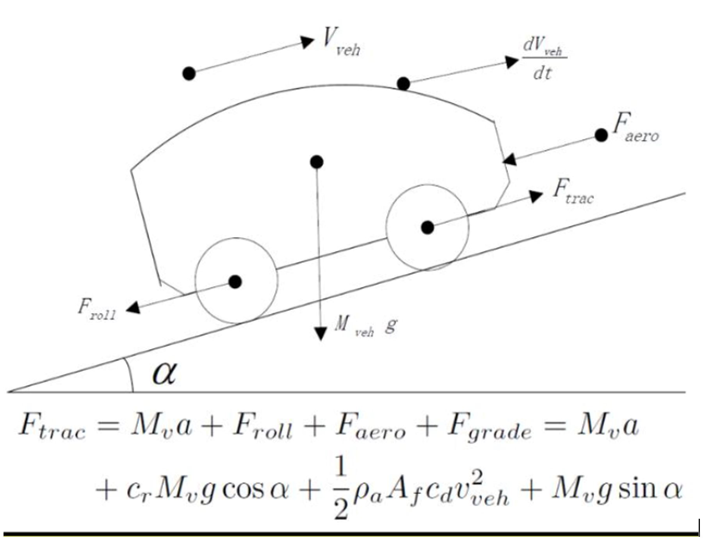

Socioeconomic and business value optimized charging infrastructure for regional heavy transports
Experiment setting
Background
Gordian's Geospatial Intelligence Tool for Electromobility is the result of 20+ years of research into transport route data analytics at KTH that have proven to be extremely valuable in in finding cost-effective charging infrastructure plans to accelerate the green transition of the heavy freight transport sector. These applications have been and continue to be successively developed in research projects like Aims Computer intelligence for electrification scenario evaluations and optimizations Use of tool and human intelligence in decision making *Due to these uncertainties, any estimates provided by this tool alone are only valid for the simulated transport electrification scenario and can only be as accurate as its input data, i.e., the simulated transport routes from SAMGODS in this case.
which have been financed by organization and programs like
The research and innovation behind the tool has been recognized by the Royal Swedish Academy of Engineering Science's Research2Business Top 100 list for 2020 and spanned a KTH spinoff: Gordian Logistics Optimization Systems AB. Gordian's mission is to deliver superior SaaS products that uniquely utilize transport route data to increase the efficiency, robustness, and sustainability of real-time logistics and transport infrastructure plans. Gordian's vision is to become the one-stop-shop for organizations to discover, manage, and utilize knowledge from their transport route data. The potential of Gordian has been recognized by being selected by the European Institute of Innovation & Technology (EIT) for Urban Mobility as one of Top 5 startups out of 250 startups in 2020.
For charging stations, charging will take a relatively long time hence charging will be most attractive at locations where the driver can use the time during charging for other activities. These locations will most likely be at the start and end of the route and around a few hours into the route when loading, unloading and mandatory rest stops usually take place and the vehicle batteries will likely be close to empty. Thus, as with electric roads, the charging needs and the electrification utilities of locations along the routes will primarily depend on routes and not the traffic counts. In this tool the Gordian technologies are used to evaluate millions of charging infrastructure plans to find a socioeconomic- and business value optimized charging infrastructure for regional heavy transports for a targeted large-scale electrification scenario with the following data and parameters: infrastructure is optimized for the simulated annual full and empty transport routes of vehicles with total weights of 24t; 300 KWh vehicle batteries; maximum 300 kW charging power per vehicle (approx. 1C charging rate); 40-minute charging times; and assumed rest stops of vehicles every 1h20min or equivalent approximately every 100km.
Two aspects of the use of the tool must be emphasized. First, the tool is arguably to most advanced and accurate tool for predicting the future charging demands which are used to derive an optimized roll-out sequence of charging infrastructure. However, the adoption of electric vehicles and transport energy and charging solutions will not be uniform across vehicle manufacturers, transport missions, logistics and transport operators, etc*. Consequently, the predicted charging demands have to be continuously followed up as the transport electrification market and scenario develops and the contextual information in the tool has to be updated and complemented with charging infrastructure utilization information to continuously adjust the remaining charging infrastructure rollout plan. This continuous follow-up an adjustment of roll-out plan will ensure that charging infrastructure will be built in a predictive, cost-effective way while taking into account the market developments. Second, while in an ideal situation to maximize the socioeconomic and business value of investments all charging infrastructure development should be supported by this tool, in practice independent economic actors and consortia of actors will maximize their own benefits from transport electrification and will establish charging infrastructure that that is "locally" optimal. Gordian, has developed interactive versions of this tool to add and incorporate the electrification effects of public charging infrastructures of other actors to determine an optimized charging infrastructure rollout sequence that maximize the benefits of the remaining investments. This complementary and inclusive planning strategy will also ensure that a holistically well-connected charging infrastructure network of networks is formed, which is needed to make the electrification shift to possible for all logistics companies easy and thereby accelerating the green transition of regional heavy transports.
The utility of any charging infrastructure component (static [charging station] or dynamic [electric road]) at a given location L heavily depends on the State of Charge (SoC) of the battery of the vehicle that passes location L and the energy use and charging opportunities that the vehicle has and uses along its route up to and after location L.
Hence, the utility of a charging infrastructure component in a network is heavily influenced by the transport routes of several vehicles as it is shown in the figure below.
 Figure: Illustration of transport route dependent aspects and challenges of ERS
placement scenario evaluations and optimizations. 3 routes and segments of three placement
scenarios shown in red, light and dark brown.
Figure: Illustration of transport route dependent aspects and challenges of ERS
placement scenario evaluations and optimizations. 3 routes and segments of three placement
scenarios shown in red, light and dark brown.
To support the energy and power demand of large-scale electromobility the grid and the power system has to be upgraded. Depending on the location and magnitude of the demand, certain existing power lines / transformers have to be reenforced / upgraded, and new ones have to be established. Additionally, local power production has to be developed.
Modelling the electric power production and distribution costs in a way takes cost correlations between locations into account is a complex task and the detailed capacity information about the local grid network (10-20kV) is not available from a single source and/or is classified. Thus, to enable the cost-benefit evaluations of charging infrastructure plans, an approximate cost is calculated by multiplying the length of the “least-costs” paths from each 5km road network segment to the nearest transformer area (obtained from the Swedish Land Survey [SLS]) between the local and regional grid network with the unit cost (405 KSEK/km) of the wire (PEX 3x240 mm2, 24 kV) and its installation that is needed to deliver a required maximum power demand of 10 MW. The least-cost calculations have been based on acost factor that is a function of the slope of the terrain and the land use classification based on 400-meter resolution data from SLS and a recent white paper on the full cost of electricity [1].
[1] Andrade, Juan, Baldick, Ross, “Estimation of Transmission Costs for New Generation,” White Paper UTEI/2016-09-2, 2017, available at http://energy.utexas.edu/the-full-cost-of-electricity-fce/.
Electric road
The cost of an electric road stretch and its road- and/or supporting structure installation is proportional the length of the stretch. The default value of the cost parameter is 20 MSEK/lane-km. The electric road equipment/installation is assumed to be able to supply a combined power capacity of 2 MW to charge vehicles that are simultaneously connected to a 1 km segment of the electrified stretch.
Charging station
The cost of a charging station is proportional to expected maximum peak power demand at the station that is calculated according to the “charging behavior model” below. The default value of the cost parameter is 2 MSEK/MW.
The total cost of a charging infrastructure component (electric road or charging station) is the sum of the grid cost and the charging equipment- and its installation cost.
A simple longitudinal dynamics model, according to Liu et al. (2020) (but without the acceleration component), as shown in the figure below is used to calculate the energy (in Watt-hours) that is needed to move a vehicle across a road edge. The topography or height profile of a road segment is approximated as a sequence of interleaved upward slope-, downward slope-, and flat segment parts where the slopes in the individual parts can be considered to be constant due to spatial resolution of the height measurements. The force acting on the vehicle on an individual part depends on the slope of the part; or equivalently the vertical elevation difference and the horizontal distance during which this elevation difference occurs. To facilitate efficient storage and computations, within an energy error margin of 1-2%, the individual uphill-, downhill-, and flat parts of a segment have been aggregated to one uphill-, one downhill- and one flat part to calculate the energies needed to propel the vehicles.

For both electric roads and charging stations a simple linear battery charging model is assumed, i.e., the SoC of the battery raises linearly with the charging time and the charging power irrespective of the SoC of the battery.
Electric road
A vehicle is assumed to charge at the maximum charging power while it moves at the posted speed limit of an electrified segment and until its batteries are fully charged. Thereafter, while on an electrified segment, the vehicle with a fully charged battery only draws enough power from the charging infrastructure to propel itself along the electrified segment according to the energy use model. On the “last” electric road segment that the vehicle encounters on its route the vehicle charges just enough to complete its route.
For electric roads it is assumed that the total maximum power that any 1km-long part of the electrified segment can provide is constant with a default value of 2 MW. Thus, a default electric road charging setting for example for a maximum charging power of 300 KW can at least support a vehicle density of 6-7 vehicles per km.
Charging stations
A vehicle is assumed to charge with the maximum charging power up to maximum time units at the start of the routes. A vehicle is also assumed to charge with the maximum charging power up to maximum time units at an intermediate charging station if the charging station is at an “appropriate stationary charging location” for the vehicle considering its route. Appropriate locations for a vehicle are defined as locations that are user-defined time units (e.g., 4-5 hours) apart in the vehicle’s route. On the “last” charging station that the vehicle encounters on its route the vehicle charges just enough to complete its route.
The expected maximum peak power demand of a location is calculated by assuming a worst case scenario that the 1/365 of the annual energy demand from stationary charging, i.e., the average daily energy demand manifests itself during a single hour. The cost and power dimensioning of charging stations is calculated according to this expected maximum peak power demand and the charging equipment cost model.
Given the four above mentioned models, the optimization of the charging infrastructure is performed by incrementally expanding an initially empty network of charging infrastructure components with a component (electric road or charging station) at the location that maximizes the ratio of the benefit of total energy demand (or equivalently CO2 displacement) and the total cost of charging infrastructure component is maximized. In the present implementation, the budget for an infrastructure is given by the number of charging station k_staions and the number of maximum 5km long electric road segments k_ers that form the charging infrastructure network.
The accurate energy use and charging simulations along the transport routes are supported by a proprietary 50x lossless compression of indexed transport route data. The compression and indexing make it possible to perform one simulation of millions of routes for an incremental expansion of the infrastructure plan for a given transport electrification scenario in 0.4 milliseconds. This simulation performance is used to evaluate millions of incremental infrastructure expansion evaluations to effectively guide the search towards a near-optimal infrastructure plan among the infinitely many possible plans. Route-optimized infrastructure plans are up to 5 times more cost-effective / profitable than non-route based (e.g., Average Annual Daily Traffic (AADT)) optimized plans or simple corridor plans.
Transport route data: Empty and loaded annual transport routes of 24+ ton trucks in 2014 according to Swedish national freight model (SAMGODS).
Road network data: SAMGODS road network segmented into maximum 5 km-long segments with elevation profiles derived based on a 50 m digital elevation model. Grid-, length- and power demand-based equipment and installation costs for electric roads and charging stations, and total costs are calculated for each road network location according to the above-described models.
Due to the uncertainties described above, any estimates provided by this tool alone are only valid for the simulated transport electrification scenario and can only be as accurate as its input data, i.e., the simulated transport routes from SAMGODS in this case.
Thus, the information provided in this tool is provided without any warantees. To adapt this tool to other data (e.g., origin-destination transport assigments of a logistic company, transport route data from fleet management systems, or simulated transport routes of other types of vehicles or vehicles that are operated in other geographies) please contact info@thegordian.io.
...
Loading transport flows of 10 million freight transport routes
Hover over the map for statistics